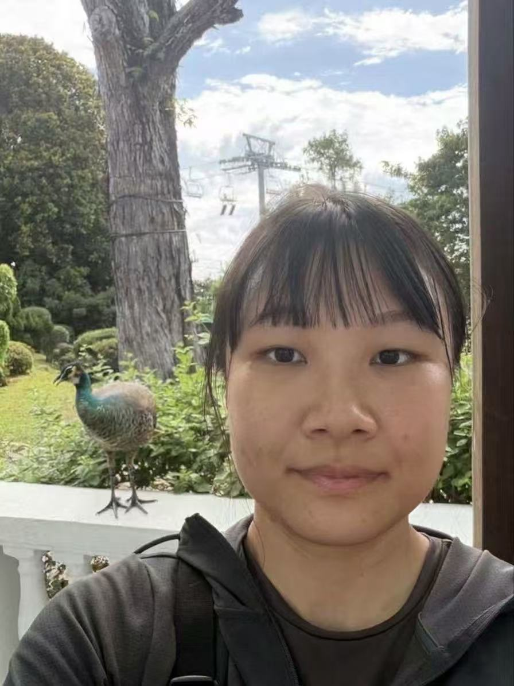

About Me

Hello, I am Yeqi Fu, currently a 3rd-year Ph.D. student at the School of Computing, National University of Singapore (NUS), advised by Prof. Zhenkai Liang and Prof. Roland H. C. Yap.
I also work with Prof. Ding Li and Prof. Yao Guo at Peking University, and with Prof. Heng Yin at the University of California, Riverside.
Publications
[CCS 2026] Neurosymbolic Disassembly
Zhaoqi Xiao, Yeqi Fu, Lambang Akbar Wijayadi, Zhenkai Liang, and Heng Yin.
ACM SIGSAC Conference on Computer and Communications Security.[OOPSLA 2026] Reframing Paths as Logic: Semantic Segmentation for Vulnerability Detection
Zong Cao, Yuqiang Sun, Zhengzi Xu, Kaixuan Li, Yeqi Fu, Yiran Zhang, Ziqiao Kong, and Yang Liu.
ACM SIGPLAN International Conference on Object-Oriented Programming, Systems, Languages, and Applications.[ISSTA 2026] WASCII: Bridging WebAssembly Specifications and Implementations through LLM-Enhanced Validation
Yeqi Fu, Kaihang Ji, Yuanpeng Wang, Zong Cao, Jiahao Liu, Ding Li, Yao Guo, and Zhenkai Liang.
ACM SIGSOFT International Symposium on Software Testing and Analysis.[ISSTA 2026] SymWeb: Feedback-Driven Context Exploration and Context-Aware Symbolic Execution for Browser-Embedded WebAssembly Vulnerability Detection
Yuanpeng Wang, Yeqi Fu, Zhineng Zhong, Zhenkai Liang, Ding Li, Yao Guo, and Xiangqun Chen.
ACM SIGSOFT International Symposium on Software Testing and Analysis.[ASE 2025] ZendDiff: Differential Testing of PHP Interpreter
Yuancheng Jiang§, Jianing Wang§, Qiange Liu, Yeqi Fu, Jian Mao, Roland H. C. Yap, and Zhenkai Liang. § Equal contributions.
IEEE/ACM International Conference on Automated Software Engineering.[ICICS 2023] Finding Missing Security Operation Bugs via Program Slicing and Differential Check
Yeqi Fu, Yongzhi Liu, Qian Zhang, Zhou Yang, Xiarun Chen, Chenglin Xie, and Weiping Wen.
International Conference on Information and Communications Security.[AINA 2020] Greybox Fuzzing Based on Ant Colony Algorithm
Sun Bowen, Bo Wang, Baojiang Cui, and Yeqi Fu.
International Conference on Advanced Information Networking and Applications.
Talks
Let LLM Learn: When Your Static Analyzer Actually ‘Gets It’
Zong Cao, Zhengzi Xu, Yeqi Fu, Yuqiang Sun, Kaixuan Li, and Yang Liu. Black Hat USA 2025.Achilles’ Heel of JS Engines: Exploiting Modern Browsers During WASM Execution
Bohan Liu, Zong Cao, Zheng Wang, Yeqi Fu, and Cen Zhang. Black Hat USA 2024.Attacking the WebAssembly Compiler of WebKit
Zong Cao, Zheng Wang, Yeqi Fu, Fangming Gu, and Bohan Liu. Black Hat Asia 2023.
Education
- Aug 2024–Present: Ph.D. in Computer Science, National University of Singapore; member of NUS Curiosity.
- Sep 2021–Jun 2024: M.S. in Software Engineering, Peking University; member of PKU-Exploit and PKUCC.
- Sep 2017–Jun 2021: B.E. in Cyberspace Security, Beijing University of Posts and Telecommunications; member of BUPT Dubhe.
Experience
- May–Aug 2023: QEMU internship Native Library Calls.
- 2019–2022: Competed in CTFs with Dubhe (2019–2021) and PKUCC/r3kapig (2021–2022), winning 10+ team awards and 4 individual awards.
Honors
- 2022 Huawei Scholarship
- 2021 Outstanding Graduate of Beijing
- 2018 China National Scholarship
Teaching Assistant
- 2025/2026 Semester 2 CS3235
- 2024/2025 Semester 2 CS3235